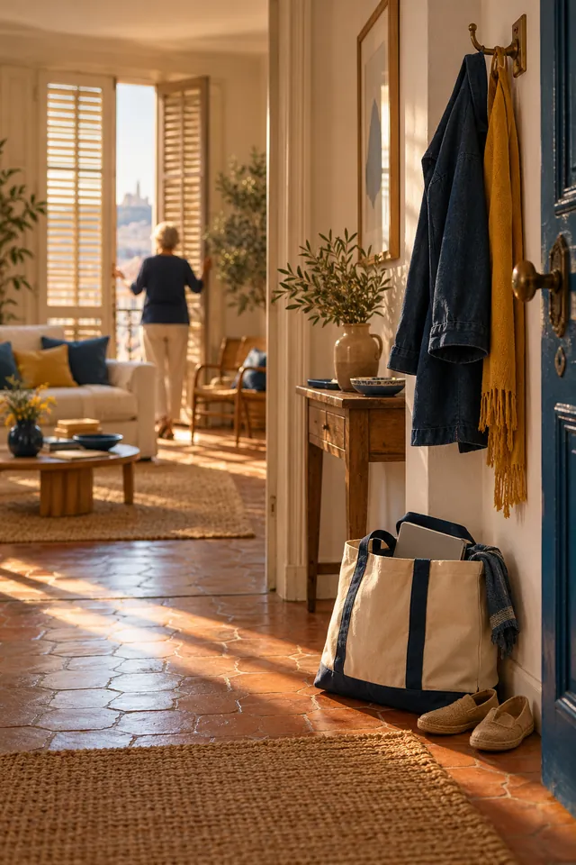
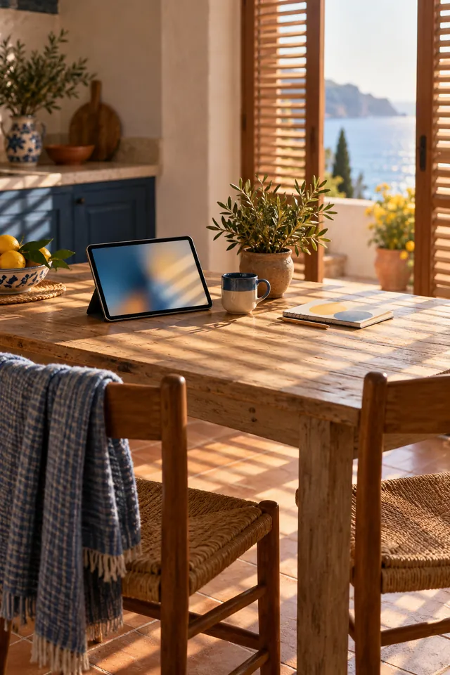
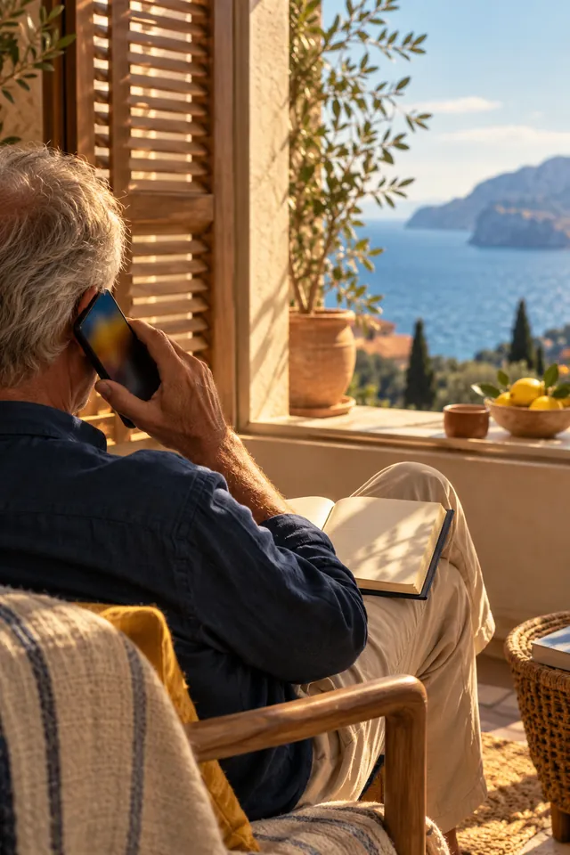

Tarif solidaire pour les bénéficiaires du RSA, de l’AAH et de l’ASPA : 15 € de l’heure, soit 7,50 € après crédit d’impôt.Tarif solidaire RSA, AAH, ASPA : 15 € de l’heure, 7,50 € après crédit d’impôt.Voir les tarifs
Mes services d’accompagnement numérique, chez vous
Mes prestations entrent dans le cadre des services à la personne, à domicile ou en proximité. L’objectif : que chacun retrouve sa fierté et son indépendance avec le numérique, avec 50 % de crédit d’impôt.
Chacun a ses besoins et son rythme : suivi individuel à domicile, séances régulières ou accompagnement ponctuel.

01
À domicile
Je viens chez vous, avec votre matériel ou le mien. Déplacement inclus.

02
Séances régulières
Un rendez-vous régulier pour progresser pas à pas, d’une à deux heures.
03
Ateliers collectifs
En petit groupe, pour apprendre ensemble et créer du lien.

04
Support téléphonique
Une question entre deux séances ? Vous m’appelez, on regarde ensemble.
Tarifs transparents et solidaires
Combien ça coûte vraiment ?
Des tarifs clairs, pensés pour être accessibles à tous. Grâce au crédit d’impôt de 50 %, vous ne payez réellement que la moitié, même si vous n’êtes pas imposable.
30 € de l’heure, soit 15 € après le crédit d’impôt de 50 %30 €30 €→15 €
30 € de l’heure, chez vous, déplacement inclus. Le crédit d’impôt vous rend la moitié : 15 € réels.
Accompagnement standard
Idéal pour débuter sereinement.
30 € de l’heure
Soit 15 € après crédit d’impôt
Apprentissage à votre rythme, à domicile
Support téléphonique entre les séances
Fiches récapitulatives personnalisées
Aucune limite de temps
Tarif solidaire
Pour les bénéficiaires du RSA, de l’AAH et de l’ASPA.
15 € de l’heure
Soit 7,50 € après crédit d’impôt
Même qualité d’accompagnement
Approche bienveillante et respectueuse
Confidentialité totale
Forfait Sérénité
Un bon compromis pour tester l’accompagnement en douceur.
300 € les 10 h
Soit 150 € après crédit d’impôt
Idéal pour maîtriser les bases : e-mail, navigation
Forfait Prestige
Pour un vrai coup de pouce dans votre autonomie numérique.
600 € les 20 h
Soit 300 € après crédit d’impôt
Recommandé pour l’autonomie complète : démarches, périphériques
Prestations de services à la personne. Déclaration SAP n° 828658518 à confirmer. Attestation fiscale remise chaque année.
Les ateliers pour les structures et le programme de réinsertion sont facturés sur devis et n’ouvrent pas droit au crédit d’impôt des particuliers à confirmer.
Crédit d’impôt de 50 %
Récupérer la moitié, même sans impôts
Le crédit d’impôt des services à la personne s’applique aussi aux foyers non imposables : l’administration vous rembourse alors directement.
1
Un prestataire déclaré
Le Lien Numérique Solidaire est déclaré en services à la personne, n° 828658518 à confirmer.
2
Une attestation annuelle
Je vous remets chaque année le récapitulatif de vos dépenses.
3
Votre déclaration
Vous reportez le montant en case 7DB de votre déclaration de revenus.
4
Le remboursement
L’administration calcule et vous rend 50 %, en réduction d’impôt ou en virement.
Plafond pour l’assistance informatique et Internet à domicile : 3 000 € de dépenses par an et par foyer, soit 1 500 € de crédit d’impôt au plus. Article 199 sexdecies du Code général des impôts.
Avance immédiate : avec ce service gratuit de l’Urssaf, le crédit d’impôt est déduit dès le paiement. proposée par Florent ? à confirmer
Associations et collectivités
Des ateliers pour vos bénéficiaires
Initiations et ateliers numériques personnalisés, avec des tarifs solidaires adaptés à votre structure. Pour les personnes suivies par le SPIP, un programme de réinsertion dédié.